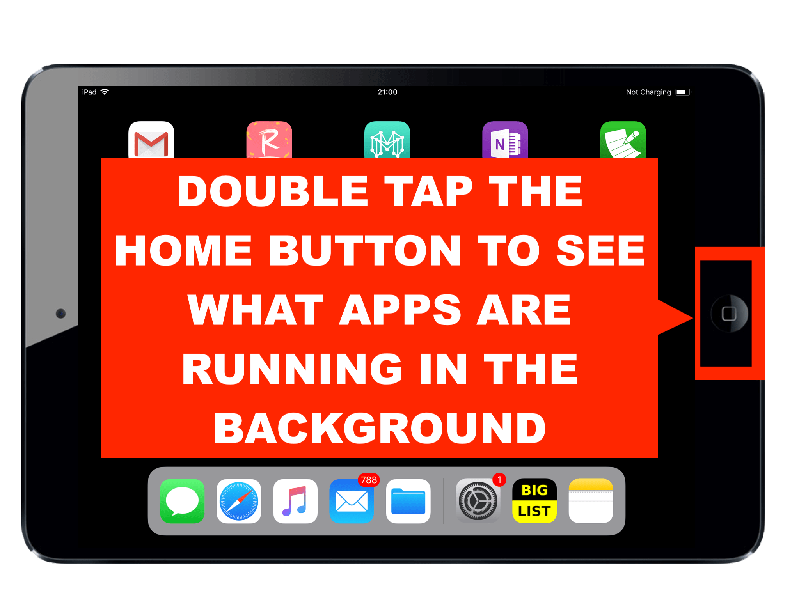
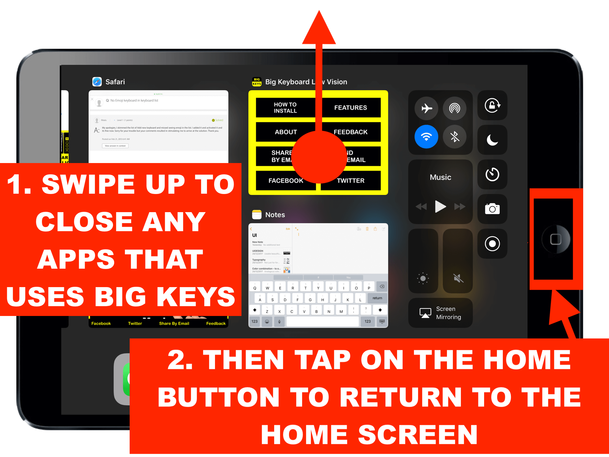

Step-by-Step Troubleshooting Guide
Step 1: View Apps Running in the Background
Double-tap the home button to view all currently running apps.

Step 2: Shut Down Apps Using Big Keys
Swipe up on any app using Big Keys to close it completely.
